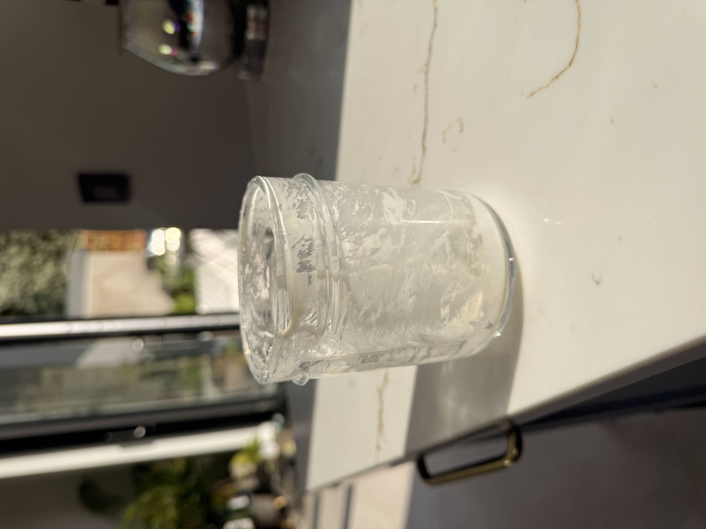
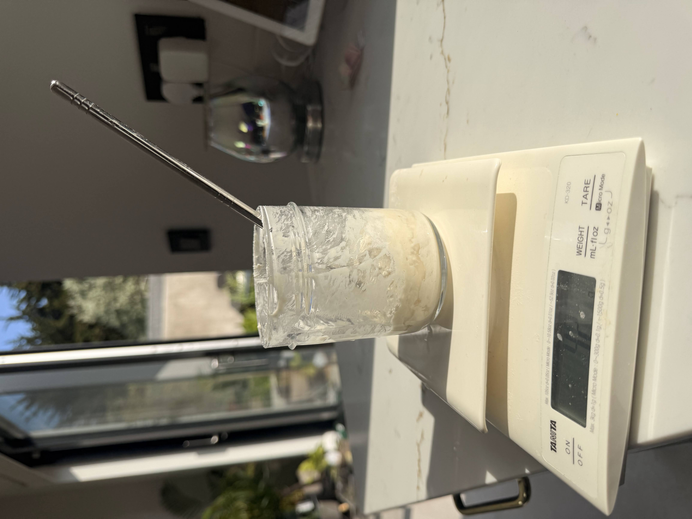
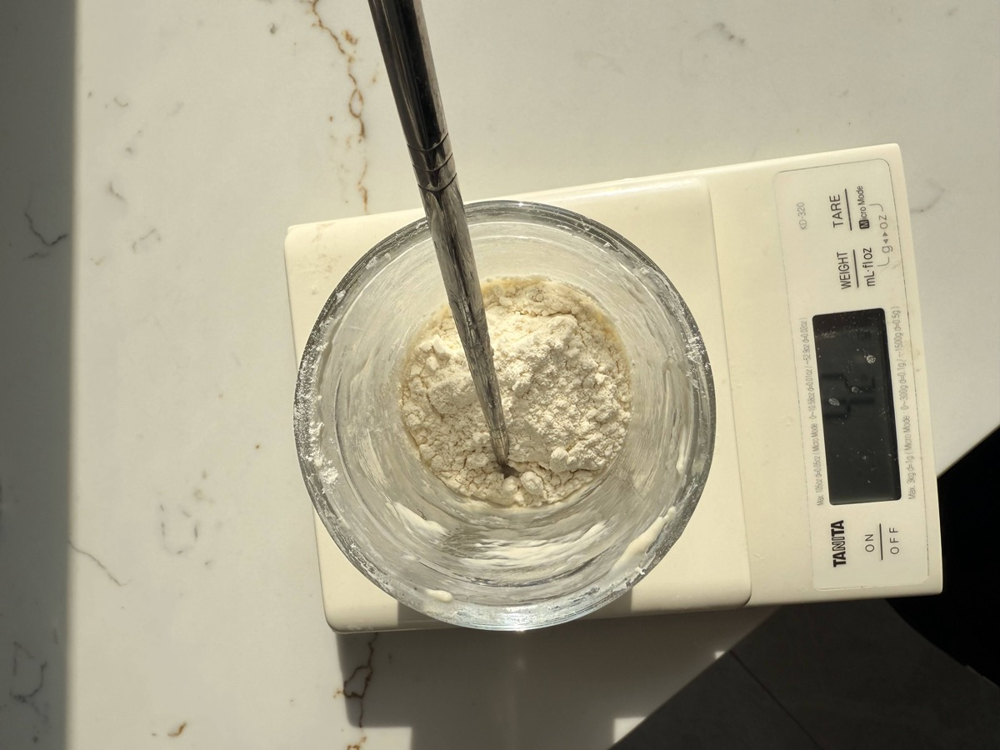
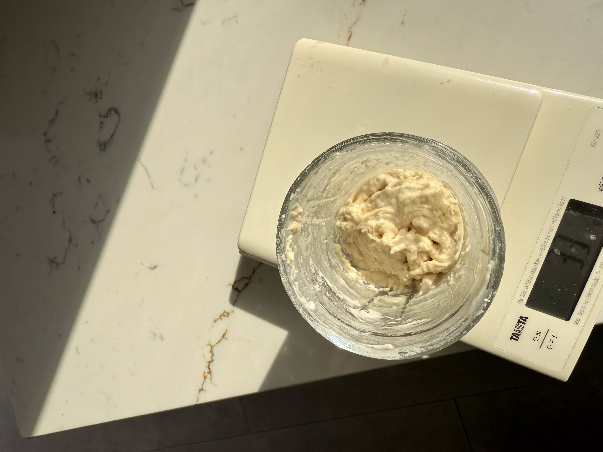

Sourdough Starter Guide: Keeping Your Culture Happy
Let's dive into the heart of sourdough: the starter. Think of it as a living culture of wild yeast and bacteria in a jar, responsible for making your bread rise and giving it that unique flavour. This guide covers my preferred simple feeding method, how to tell if it's ready, the crucial role of temperature, common troubleshooting, and how to create a starter from scratch if you're just beginning.
My Simple 'Scrapings' Feeding Method (No Waste!)
A common concern with sourdough is discarding starter during feedings, which can feel wasteful. The good news is this method avoids that completely! **We don't discard.** Instead, we utilize the small amount of starter naturally left clinging to the jar after using most of it for baking.
This keeps your starter active and ready without accumulating excess discard. (If you don't have an active starter yet, jump down to learn how to create one from scratch first!)
How to Feed Your Starter Using the Scrapings Method
Once your starter is established and active, you can switch to this method. You'll typically feed your starter after using most of it for baking. If storing it in the fridge between bakes, feeding about once a week is usually sufficient (more on storage later). If kept at room temperature, it requires more frequent feeding (often daily).
- Prepare: You need your starter jar (containing only the residual scrapings – roughly 5-10g is fine), your digital scale, 50g lukewarm water (around 35-40°C / 95-104°F), and 50g strong white bread flour. Top tip - use a chopstick to stir it up! 
- Add Water & Swirl: Pour the 50g of water into the jar with the scrapings. Give it a good swirl or stir to loosen the old starter bits. It should resemble milky water. 
- Add Flour: Add the 50g of strong white bread flour. 
- Mix Thoroughly: Stir well, ensuring no dry flour remains. The target consistency is a **thick paste**, like peanut butter or thick yoghurt. 
- Cover Loosely: Rest the lid on top or use cling film with holes.
- Let it Rise: Leave at room temperature. It should get bubbly and rise (ideally double) in 4-12 hours, depending on temp/vigour.
And that's the process! It's a straightforward, no-discard method that feeds the remaining starter effectively.
Is My Starter Ready to Bake With? Signs of Activity
Getting a starter going takes time, and the biggest ingredient is often **patience**! Readiness is about activity, not just age. Here’s what to look for:
- Significant Rise (Doubling): Reliably doubles (or more) in volume within 4-8 hours after feeding at room temperature. Use a marker/band on the jar to track.
- Lots of Bubbles: Visibly bubbly and airy throughout, like a sponge.
- Predictable Pattern: Rises, peaks, and falls predictably after feeding. Use near its peak.
- Pleasant Smell: Smells pleasantly sour, yeasty, maybe tangy or fruity. Not strongly unpleasant (like nail polish remover - see Troubleshooting).
- (Optional) Float Test: A spoonful dropped in water floats if ready (due to trapped gas). Not always 100% reliable; visual cues are often better.
Remember Temperature & Patience! Temperature greatly affects timing. Cooler temps mean slower activity (which is fine!). It often takes **10-14 days (or more!)** to establish a strong starter, not just 7 days. Be patient!
Why Temperature Matters (A Lot!)
Your starter's yeast and bacteria work at different speeds depending on warmth. Understanding this helps predict behaviour.
- Warm (e.g., 24-28°C / 75-82°F): Faster activity, quicker rise/peak, needs more frequent feeding if kept out. Can increase tanginess.
- Cooler Room Temp (e.g., 18-21°C / 65-70°F): Slower activity, longer rise/peak. Don't mistake slowness for weakness! Feed less often. Might be milder flavour.
- Fridge Temp (e.g., 4-5°C / 39-41°F): Very slow activity. Ideal for storage (weekly feeding) and long cold proofing of dough. Needs feeding(s) at room temp to wake up before baking.
- Extremes: Avoid excessive heat (can kill starter >35-40°C / 95-104°F) or freezing temps (causes inactivity).
The Takeaway: Aim for consistency. Use slightly warmer water for feeding if your kitchen is cool. Find a stable spot. Patience is key, especially in cooler environments!
Creating Your Starter From Scratch (If You Need One!)
Don't have a starter yet? Want to capture your own local wild yeast? It's easier than you think, but requires patience (often 10-14 days, sometimes more!). This is a common method.
What You'll Need:
- Clean glass jar (0.5-1 litre)
- Digital Kitchen Scale
- Flour: Whole Wheat or Rye flour recommended for Day 1, Strong White Bread Flour for subsequent feedings.
- Water: Filtered or dechlorinated tap water (lukewarm initially).
- Stirring utensil.
The Day-by-Day Process:
- Day 1: Initial Mix
Combine 50g Whole Wheat/Rye flour + 50g lukewarm water. Mix to thick paste. Cover loosely, leave 24h. - Day 2: First Feed
Discard most (leave ~50g). Add 50g Strong White Flour + 50g water. Mix, cover, leave 24h. - Day 3: Observation & Feed
Repeat Day 2 (discard, feed 50g flour/50g water). Look for bubbles/sour smell. - Day 4: Getting Active?
Repeat Day 3. Activity (bubbles, rise/fall) should increase. Smell might change (acetone/vinegar normal). - Day 5 & 6: Establishing Routine
Repeat Day 3. Look for more predictable rise/fall. Smell should improve. - Day 7-14+ (Patience!): Continue the daily discard/feed routine. Don't be discouraged if it takes longer than 7 days! Look for the Signs of Readiness (reliable doubling in 4-8 hrs, lots of bubbles, pleasant smell). Once it consistently shows these signs for 2-3 days in a row, it's ready! You can then switch to the 'Scrapings Method' for maintenance.
Note: Ignore funky smells unless it's fuzzy mould (pink/orange/black) – discard immediately if mould appears.
Troubleshooting Common Starter Issues
Sometimes starters do slightly odd things. Don't panic! Here's how to handle common scenarios:
-
Problem: Dark Liquid Layer on Top ("Hooch")
Cause: Your starter is hungry! This alcohol byproduct appears when it's gone too long between feeds or fermented very quickly in warmth.
Solution: Simply **pour the hooch off** before feeding as usual. (Some people stir it in for extra sourness, but pouring off gives a milder flavour). If it happens often, try feeding slightly more frequently or keeping your starter a bit cooler.
-
Problem: Sluggish / Not Rising Much
Cause: Often due to cool temperatures, infrequent feeding, or maybe the starter is still young.
Solution: First, **be patient**, especially if creating from scratch (remember 10-14+ days is normal!). Ensure it's in a reasonably warm spot (see our guide on Temperature Effects). Make sure you're feeding it regularly enough for its environment (daily if at room temp, weekly if in fridge - making sure to revive fully before baking). Stick to the feeding ratio using **strong white bread flour** and good water. Consistency is key.
-
Problem: Runny Consistency
Cause: Usually means the feeding ratio was off (too much water vs flour by weight) or very high temperatures caused the gluten structure to break down quickly after peaking.
Solution: Double-check you're measuring flour and water accurately by weight using your scale. The target consistency after feeding should be a **thick paste**, like peanut butter or thick yoghurt, not pourable. If it seems too thin right after feeding, slightly reduce water next time (e.g., 45g water to 50g flour). If it gets runny *after* rising well in high heat, it likely just needs feeding again – **pour off most of the runny starter** (leaving scrapings) and feed as usual.
-
Problem: Funky Smells (Acetone, Vinegar, Socks?!)
Cause: Different microbes bloom at different stages. Strong smells like nail polish remover (acetone) or vinegar are common, especially when a starter is young or very hungry.
Solution: Generally, **ignore the smells unless you see visible mould**. If it smells strongly acidic or alcoholic, it's likely just hungry – pour off any hooch and feed it. Keep feeding regularly, and the smell should mellow out to a pleasant, yeasty tang as the culture balances. **BUT, if you see any pink, orange, or black fuzzy spots – that's mould. Discard immediately and start over.**
Remember, patience and consistent feeding are the best tools for most starter issues!
That covers the main starter topics for now! Next steps could include adding storage info or more advanced tips.